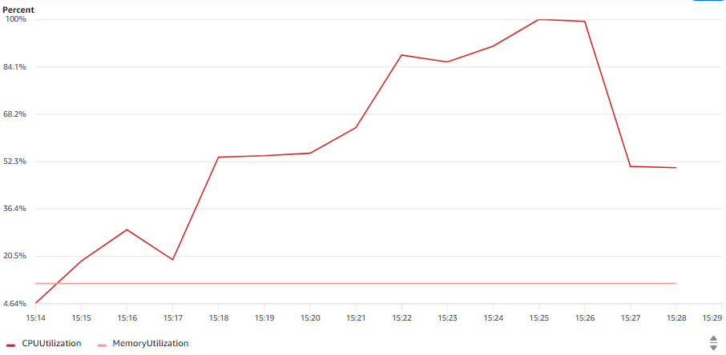

v5.1에서 확정된 최종 구성에 대해, 기존 표준 부하 조건을 적용한 최종 검증 결과입니다.
| 항목 | 문제 확인 시점 | 최종 구조 | |
|---|---|---|---|
| 50 VU 부하 (v1.0) | 임계점 진입 (응답시간·CPU 상승 시작) | → | 다른 VU 구간과 동일 수준 유지 (avg 861ms) |
| 100 VU 부하 / SSM 접속 (v1.0) | CPU 99%, SSM 접속 불가 | → | SSM 접속 구조 자체 없음(ECS Fargate), 요청 처리 에러 0% |
| DB Connection (v5.0) | FATAL 2,576건 / 30분 | → | FATAL 0건, 최대 74/79 |
| Worker Scaling (v1.0~v1.1) | 단일 Worker 중심 처리 | → | Auto Scaling으로 Task 1 → 9 자동 조정 |

Scale-out 직전 일시적으로 100%에 도달한 뒤 Task 증가와 함께 즉시 감소 — v4.3과 동일한 패턴이며, Scale-out/Scale-in 반복은 발생하지 않았습니다.
v1.0부터 사용해온 것과 동일한 점진적 부하 테스트(k6, gradual.js, VU 10 → 30 → 50 → 100, 각 3분 유지, 총 14.5분)를 v5.1에서 확정된 최종 구성(rule-worker Task 9 / Pool 4, ai-worker Task 9 / Pool 2)에서 다시 수행했습니다.
RDS Connection 관련 동작은 이미 v5.1의 Soak Test(50 VU, 30분 유지)에서 확인되었습니다. 이번 테스트에서는 표준 부하 조건에서의 요청 처리 결과와 Worker Auto Scaling 상태를 확인했습니다.
베이스라인(1회차 cold start 제외, 2~10회 평균): avg 0.92s · p95 1.17s · 에러율 0%
| VU | avg | p95 |
|---|---|---|
| 10 | 901ms | 1,432ms |
| 30 | 866ms | 1,279ms |
| 50 | 861ms | 1,230ms |
| 100 | 866ms | 1,301ms |
총 요청 수 29,288건 (14,644 iteration), checks 통과율 100%, 에러율 0%
| 시간 | 서비스 | Desired Count |
|---|---|---|
| 15:23 ~ 15:24 | ai-worker | 1 → 4 |
| 15:25 ~ 15:26 | rule-worker | 1 → 4 |
| 15:25 ~ 15:26 | ai-worker | 4 → 7 |
| 15:28 ~ 15:29 | rule-worker | 4 → 7 |
| 15:28 ~ 15:29 | ai-worker | 7 → 9 (최대) |
| 15:31 ~ 15:32 | rule-worker | 7 → 9 (최대) |
RDS Connection — DatabaseConnections 7~40 수준 (max_connections 79). CPU 3.1~23.6%, Write/Read Latency 0.00x초대, Write/Read IOPS 낮은 수준, DiskQueueDepth 0.001~0.103 유지. v5.0에서는 50 VU 부하를 30분간 유지했을 때 Connection 고갈이 발생했으나, 이번 14.5분 테스트에서는 재현되지 않았습니다.
ai-queue — Visible 메시지 최대 11,227건, Oldest Message 최대 513초. v4.1 / v5.1에서 확인된 OpenAI API Rate Limit(RPD)에 따른 처리량 제약과 동일한 패턴이며, 애플리케이션 내부 DB Connection 문제와는 별개의 제약입니다.